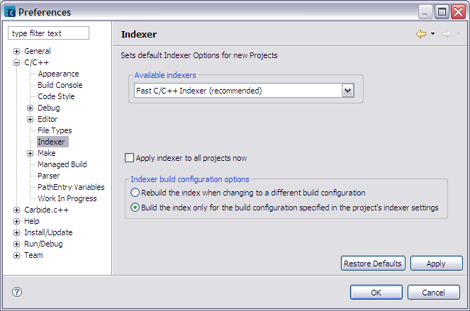
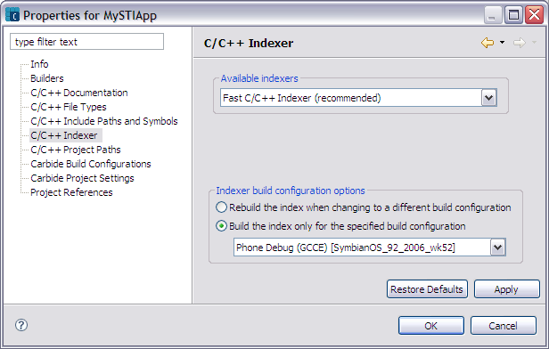

The C/C++ Indexer uses the parser to create a database of source and header files that provide the basis for C/C++ search, navigation features and content assist. The goal of indexing is to record all named elements in a project's source code and store them with their related data. The indexer parses each source file in your project and updates related indexes. By indexing your files with the indexer, useful features such as code completion and fast file search can be used. It is also possible to specify different indexer settings for each project in your workspace.
If you choose to perform the Full C/C++ Indexer option the indexer will consume the CPU for some time, but you will gain more benefit from the process after it completes. However, if you do not require the benefits of indexing your project, select the No Indexer option to speed up the process of building your project.
The indexer runs on a background thread and reacts to resource change events such as:
The global Indexer is accessed by selecting Window > Preferences > C/C++ > Indexer (figure 1). The sections outlined in red appear as part of the project level indexer.
NOTE You can also rebuild a project's index by selecting a project, then right-click and select the Rebuild Index menu item.

Figure 1 - Indexer Window in Preferences Panels
The project indexer is accessed by selecting a project in the Project Explorer or Symbian Project Navigator view and selecting Project > Properties > C/C++ General > Indexer (figure 2).

Figure 2 - Indexer Window in Project Properties
| Name | Function |
|---|---|
| Select indexer | Dropdown list of available index options.
|
| Apply indexer to all projects now | Select this option to apply the Fast C/C++ Indexer option to all projects in your current workspace. |
| Rebuild the index when changing to a different build configuration | Select this option to rescan and index the source files for the current project when you change the active build configuration. The index will be built based on the active build configuration. All macros and header files used to build the index will be taken from the active build configuration. |
Build the index only for the build configuration specified in the project's indexer settings
Build the index only for the specified build configuration |
The indexer will only be run for the build configuration specified in the Indexer panel in the project's property settings. All macros and header files used to build the index will be taken from the specified configuration.
NOTE This option appears in the project properties indexer panel. A dropdown list is provided to select a build configuration for the currently selected project. |